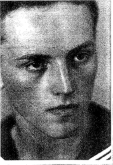
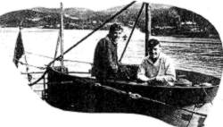
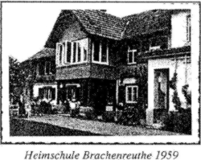
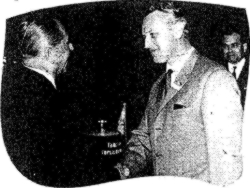
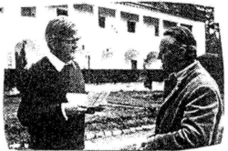
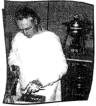
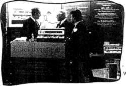
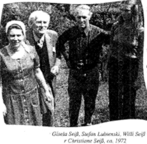
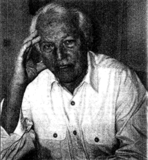

| The English version of this site, see fhab.de/en |
 |
|
"Ich weiß, wer du bist."
Willi Seiß erzählt aus seinem Leben
Am Samstag, den 21.7.2000, besuchte ich Willi Seiß am Bodensee und ließ mir aus seinem sehr ereignisreichen Leben erzählen. Obwohl mir die anthroposophische Heilpädagogik seit 25 Jahren bekannt ist, wusste ich z.B. nicht, was sie ihm für den Aufbau der heilpädagogischen Arbeit - wie sie von Karl König überkommen ist - zu verdanken hat. - Ist Willi Seiß einer der allgemein „unbekannten" Anthroposophen, den aber viele „Gründerväter und -mütter" der letzten Jahrzehnte sehr gut kennen bzw. kennen könnten...? Machen Sie sich selbst ein Bild. -Monika Neve
Jugend und Kriegszeit

Willi Seiß: Ich hatte eine sehr harmonische Kindheit, obwohl ich viel alleine war dadurch, dass beide Eltern in der damals nicht einfachen Zeit berufstätig sein mussten.
Monika Neve: Waren Sie ein Einzelkind?
Willi Seiß: Nein. Ich hatte einen Bruder, aber er hat sich mit mir nie verstanden. Er war zwei Jahre älter und versuchte, seine Kraft an mir auszulassen. Deshalb nahm ich mir vor, stärker zu werden als er. Ich kaufte mir Federhanteln und übte damit jeden Tag. Anschließend kam ein Langlauf von ca. acht km und dann schwamm ich noch ca. einen Kilometer. Anschließend fuhr ich oft noch mit dem Rad eine Rundfahrt um Stuttgart, die es heute noch gibt. Das waren nochmals 42 km. Das trieb ich solange, bis mein Bruder nicht mehr stärker war als ich. Das war das eine. Weiter kam dazu, dass ich eine ganze Reihe von Sportarten aktiv betrieben habe. Ich habe geboxt, auch in Wettkämpfen; ich trieb sehr viel Leichtathletik.
Monika Neve: Boxen ist ja schon ungewöhnlich...?!
Willi Seiß: Ja, aber das hat mir schon viel Freude gemacht. Weniger der Boxkampf als solcher als die Vorbereitungen; das Training mit dem Seilspringen. Wir hatten Wetten abgeschlossen, wer arn längsten springen kann, und ich weiß noch heute, ich bin über 1600 Sprünge gekommen, ohne dass das Seil hängenblieb. - Aber die schönste Zeit in der Jugend war eigentlich, als ich aktiver Ruderer war. Ich hatte damals nach der Schulzeit - ich war auf der Realschule Stuttgart-Cannstadt gewesen - eine kaufmännische Lehre begonnen, innerhalb der Frankfurter VersicherungsAG und war dann immer der Erste, der aus dem Büro kam, um direkt zum Ruderhaus des Rudervereins nach Stuttgart zu gehen. Da nahm ich den Einer, fuhr acht Kilometer mit dem Einer; dann kam mein Freund, und wir fuhren weiter mit dem Zweier, danach mit dem Vierer und zuletzt mit dem Achter. - Das waren also vier Trainingseinheiten von je acht km. Wir haben es dabei sehr, sehr weit gebracht, so dass wir auch als Jugendmannschaft Seniorenrennen gewonnen hatten, denn wir hatten eine ganz ausgezeichnete Startposition - bei jedem Rennen. Das war technisch wichtig, einen guten Start zu haben. - Das zur Jugend. Und dann wurde ich frühzeitig eingezogen.
Monika Neve: Sind Sie durch dieses sportliche Engagements davor bewahrt geblieben, in die obligatorischen nationalsozialistischen Jugendorganisationen eintreten zu müssen?
Willi Seiß: Nein, aber ich konnte mich dadurch aber dem wöchentlichen aktiven Dienst in der Hitlerjugend entziehen, indem ich sagte: "Ich muss zum Training gehen!"
Monika Neve: Und das wurde akzeptiert?
Willi Seiß: Was sollten sie denn machen. Ich sagte ihnen: Ich fahre ja nachher auch für euch die Rennen, folglich muss ich trainieren … - Dann kam ein Ereignis, das man generell erwähnen muss. Wir mussten einmal antreten und wurden von Offizieren der Waffen-SS inspiziert. Die Offiziere liefen an uns vorbei, deuteten dabei mit dem Finger auf den einen oder anderen: „Vortreten, zur Waffen-SS!" Wir wurden einfach gezwungen. Als ich an die Reihe kam, hieß es: "Vortreten, zur Waffen-SS". Mein Schicksal bewahrte mich davor, da ich als Freiwilliger zur U-Boot-Marine nicht zur SS gezwungen werden konnte.
Monika Neve: Sie sind also als "Landratte" - wie man bei uns an der Küste sagt – zur Marine gegangen?
Willi Seiß: Ja. Ich hatte innerlich gewüsst, dass ich-zu dieser Waffengattung gehen müsste. Ich wurde früh eingezogen. Meine Ausbildung begann in Eckernförde und das Kriegsende entschied sich für mich in Estland, in Tallinn, dadurch, dass unser U-Boot, aus dem Finnischen Meerbusen zur Material- und Proviantübernahme kommend, bei einem russischen Luftangriff einen Bombentreffer erhielt, der das Boot zu weiterem Einsatz ausschloss. So zuckelten wir, tauchunfähig, entlang der Ostseeküste von Werft zu Werft, ohne dass das Boot richtig repariert werden konnte.
Monika Neve: Wie haben Sie den Krieg mit dem U-Boot erlebt? Haben Sie die Dramatik des Krieges unter Wasser miterlebt, oder war das U-Boot als solches schon dramatisch genug? Haben Sie auch Angriffe führen müssen, also auf andere Schiffe geschossen und diese versenkt?
Willi Seiß: Ein U-Boot mit seinen komplizierten und ineinandergreifenden Funktionen oder Abläufen war fiür mich nicht dramatisch, vielmehr interessant, sodass ich mich auf allen Stationen des Boote zurechtfand, auch die Maschinen bedienen konnte, obwohl ich Leiter der Funkstation des Bootes war. Mich erfüllte diese Aufgabe so sehr, dass ich eine Versetzung zur Seeoffiziersschule ausschlug, was wiederurn zur Folge hatte, dass ich auf diesem Boot verbleiben musste. Da unser Boot zuletzt mit der Aufgabe betraut war, die russische Ostseeflotte in Petersburg abzufangen, waren wir nicht im fernen Einsatz im Atlantik, was uns ersparte, andere Schiffe versenken zu müssen, deren Besatzungen ja nach einem Treffer nicht gerettet werden durften. So wurde ich in fünf Jahren aktiven Einsatz davor bewahrt, Menschen töten zu müssen. Ein Schicksal, das vermutlich bei der Waffen-SS nicht so abgelaufen wäre. - Ich habe sogar viele Leben retten können - und zwar dadurch: Der Finnische Meerbusen - in dem sechs deutsche U-Boote lagen - wurde morgens um vier Uhr geschlossen, von deutschen Minenleger, weil die Russen auf dem Landweg vormarschiert waren. Jetzt mussten wir raus aus dem Meerbusen. Nun sind die Funksprüche, dass die U-Boote raus sollten, nicht angekommen: sie waren falsch verschlüsselt. Und ich habe nach zweimaligem Versuch, die jedes Mal in einem Reserve-Hand-Verfahren stattfanden, diese Funksprüche schließlich entschlüsseln können und habe die ganze U-Boot-Einheit aus dem Meerbusen herausgeleitet. Ich übernahm damals die Funkleitung von der gesamten Ostsee, weil ich mit meinen paar Leuten das einzige Boot hatte, das sämtliche Funksprüche - komplett - empfangen und entschlüsselt hatte, mehr als die Landeinheit, und weitergegeben habe. Dadurch habe ich die Funkleitung in Kiel abgesetzt und habe die Funkleitung Ostsee übernommen. Das wäre ein Thema für sich, das darzustellen …
Monika Neve: Sie haben das Kriegsende dann wo erlebt?
Willi Seiß: In Flensburg, wo wir unser Schiff vor dem Zugriff der Engländer versenkten. Zuvor lagen wir in der Werft in Kiel.
Dort hatte ich ein einschneidendes Erlebnis. Ich erhielt eines Tages ein Büchlein einer Sammlung von Aufsätzen von Nietzsche. Ich sehe mich noch heute vor einer Baracke an einem Sonntag im Sonnenschein sitzen und darin lesen. Es stand beim Lesen vor mir die Frage: Wie kommt dieser Mann, von dem ich damals noch nichts gehört hatte, dazu, so zu denken? Diese Art zu denken, nicht der Inhalt, den ich nicht verstanden hatte, faszinierte mich. Ich lernte ganze Passagen auswendig, um meine Gedanken daran zu beobachten, ob auch ich so denken könne? Damals nahm ich mir vor: so wie der denkt, will ich denken lernen.
Monika Neve: Dies war also ein Schlüsselerlebnis für Sie, diese Erfahrung mit Friedrich Nietzsches Denken?

Es war meine Rettung, dass das Seil im letzten Moment noch durchgeschnitten werden konnte und ich gleichfalls zu den anderen in ein vorüberkommendes Boot gezogen wurde. Im Bild ein eigenartiges Zeichen, das mir von außen für den Tod oder die lnitiation gegeben wurde. - Überhaupt waren wir in Situationen, die nur durch Geistesgegenwart unser Boot vor dem Verlust oder Untergang retteten. Aber das führt hier zu weit. - Durch unsere hohen Verluste an U-Booten im Atlantik, aber auch schon bei den aus der Ostsee auslaufenden Booten im Skagerak und von der französischen Atlantikküste, in der Biskaya wurden erfahrene Leute gesucht, um zu Seeoffizieren ausgebildet zu werden, die zur Übernahme von U-Booten vorgesehen waren, insbesondere zu damals neuen Bootstypen. Da ich nach Kriegsende als Funkoffizier zur See fahren wollte, war mein Weg klar. Dieser Entschluss bewahrte mich vor dem Einsatz in den letzten Kriegstagen in Berlin, wohin alles, was noch zur Verfügung stand, hin abkommandiert wurde.
Monika Neve: Wie alt waren Sie, als Sie nach dem Krieg auf abenteuerlichen Wegen, von denen Sie mir mal erzählt haben, wieder zurück nach Stuttgart kamen?
Willi Seiß: Da war ich gerade mal gut 22 Jahre alt.
Monika Neve: Was fanden Sie zu Hause vor? Und wie gestaltete sich Ihr Weg dann weiter?
Willi Seiß: Also, da war alles zerstört. Das Elternhaus war ausgebombt. - Ich selbst hatte mir vorgenommen: ich will mit der Schule weitermachen.. So hatte ich versucht, in die Wirtschaftsoberschule zu kommen, um das Wirtschaftsabitur zu machen. - Geldsorgen hatte jedenfalls keine...
Monika Neve: Wieso?
Wirtschaftsoberschule und Waldorfschule
Willi Seiß: Wir erhielten, wenn wir auf Fahrt waren, stets Zigaretten in Tropenpackungen zu je 100 Stück. Ich war Nichtraucher. Einen Teil sandte ich meinem Bruder nach Afrika, der dort in Kriegsgefangenschaft war. Den anderen Teil tauschte ich ein. Die Menschen heute, die diese Zeiten nicht erlebten, können es sich gar nicht vorstellen. Es gab ja nichts mehr, weder in den letzten Kriegsmonaten, noch nach dem Krieg. Heute leben wir in jeder Hinsicht in einer Phase der Überfütterung. Aber zu Ihrer Frage:
Wir lagen in Kiel mit unserem Boot zur Reparatur in einem Bunker. Als ich eben von Bord kam, ging ein russischer Gefangener, der auf der Werft arbeitete, dicht an mir vorbei und blickte mich dabei an. In seinen Augen sah ich die Frage:
Hast du was für uns? Wir begegneten uns wieder und er sagte nur: „Zigaretten?" So kamen wir überein, dass ich diese Russen mit meinen Zigaretten versorgte. Die hatten Geld aus ihrer, wenn auch knappen, Entlohnung, ich das, was sie nicht bekommen konnten. Der Tauschkurs war damals, wie auch nach dem Kriege auf dem Schwarzmarkt, fünf Reichsmark gleich eine Zigarette. Zigaretten waren Zahlungsmittel. So hatte ich eine Tasche mit Scheinen so (zeigt) dick. Damit finanzierte ich dann die Schule, die Wirtschaftsoberschule in Stuttgart.
Dort erfolgte mein nächster Lebenseinschnitt. - Unser dortiger Lehrer in Steno und Maschinenschreiben gab in der Regel zehn Minuten lang Unterricht und dann folgte ein Vortrag über erkenntnistheoretische Probleme, über Wahrnehmung, Denken, Bewusstsein usw. Dies war für mich alles neu. Ich frug wieder, wie kommt es, dass einer so denken kann, wie der Nietzsche?
Monika Neve: Eine Zwischenfrage: Sie hatten doch Jahre hinter sich, wo Sie trotz Ihrer Jugend Ihren "Mann stehen mussten". Ist das schwierig für Sie gewesen, nun wieder in die Rolle eines Schülers zurückzukehren?
Willi Seiß: Überhaupt nicht. Ich wollte lernen. Das geht schon daraus hervor, dass ich mir an Bord Bücher gekauft hatte, um später einmal Physik studieren zu können. Und wenn ich „Wie erlangt man Erkenntnisse der höheren Welten?" gehabt hätte, dann hätte ich alles, was darin steht, schon mit 15 geschafft. Denn ich hatte einen starken Willen und eine außergewöhnliche Konzentrationskraft. Und so habe ich in meiner Freizeit aus Büchern heraus Physik studiert. Es war in mir einfach der Drang, mich weiterzuentwickeln.
Monika Neve: Also dieser erwähnte Lehrer hatte vor den Schülern erkenntnistheoretische Probleme ausgebreitet …
Willi Seiß: … und mein Freund und ich meinten, wir müssten doch herausfinden, woher der das hat und kann. Wir erfuhren bald, der Lehrer sei Anthroposoph. Damals hörte ich dieses Wort zum ersten Mal. So stellte ich ihm im Unterricht die Frage, was das sei, Anthroposophie. Er sagte, darüber möchte er nicht sprechen, es sei denn, wir würden darauf bestehen. Natürlich bestanden wir darauf. Nun fing er an, über Rudolf Steiner zu sprechen, aber wie das damals war, außerordentlich zurückhaltend, dass Rudolf Steiner eine Pädagogik entwickelt habe und es hier in Stuttgart eine Schule geben würde, die Waldorfschule, in der diese Pädagogik unterrichtet wird. Am nächsten Tag sagte ich zu meinem Freund: „Du, wir geh'n in diese Schule." Das Ziel, mit dem wir in die Wirtschaftsoberschule gegangen waren, trat völlig in den Hintergrund. - Wir gingen gemeinsam rauf in die Waldorfschule und wurden sofort von Dr. Schwebsch empfangen. Der fragte nur, was wir wollten. Und wir antworteten: Wir wollen hier an diese Schule. Wir haben etwas von Rudolf Steiner gehört, seinen erkenntnistheoretischen Betrachtungen und wie er über Goethe spricht. Das interessiert uns. - Darauf nahm uns Dr. Schwebsch sogleich in die Schule auf.
Monika Neve: Wie lange haben Sie diese Schule besucht?
Willi Seiß: Nun, Zeit und Schulgeld spielte für mich keine Rolle. Und als Schwebsch sagte zu mir, „Sie können in die 11.Klasse- und mein Freund sollte in die 10., sagte ich, nein, dann gehe ich auch in die 10., denn wir wollten zusammen bleiben. - Ernst Weißert bekamen wir als Tutor. So lernte ich damals noch all die alten Waldorflehrer kennen: Herbert Hahn, Max Wolfhügel, den lieben Karl Schubert. - Dieser Mann war ein Phänomen. Er stand meist in der Pause an die Wand vom Hauptgebäude gelehnt. Ich weiß nicht wie, jedenfalls stellte ich mich ihm gegenüber. Wir schauten uns lange wortlos an. Minutenlang. Dann gingen wir voneinander.
Monika Neve: Auch eine ungewöhnliche Art der Begegnung.
Willi Seiß: Ich habe erst später erfahren, um wen es sich bei Karl Schubert gehandelt hat. Das können Sie aufnehmen oder rausschneiden: Er war einer von den beiden Jüngern auf dem Gang nach Emmaus … Der zweite Jünger war gleichfalls ein Zeitgenosse. Beiden bin ich in diesem Erdenleben begegnet.
Monika Neve: Wie ist Ihre Schullatdbahn dann weitergegangen?
Begegnung mit Karl König und der Camphill-Bewegung
Willi Seiß: Dann kam die Währungsreform. Damit war das Geld nichts mehr wert und ich konnte nicht weitermachen, Ich suchte eine wirtschaftliche Betätigung und fand auch eine. Ich muss noch einfügen: Während der damaligen Schulzeit besuchte ich fast allabendlich Arbeitsgruppen, die von älteren Anthroposophen eingerichtet waren. So lernte ich viele Menschen kennen und viele Bereiche der Anthroposophie. Auch mit dem Lehrer an der Wirtschaftsoberschule. Wir waren durch viele Jahre jeden Sonntagmorgen mit einem kleinen Kreis zusammen, in dem wir sämtliche grundlegenden Werke Steiners studierten.
Da hörte ich einen Vortrag von Dr. Karl König in Stuttgart. Während des Vortrags drehte er sich etwas um und blickte mich an. Durch unseren Blickkontakt wusste ich, dass wir etwas miteinander zu tun hatten und wohl noch haben würden. Nach dem Vortrag ging ich zu ihm. Er hatte über Camphill gesprochen. Ich entschloss mich, dorthin zu gehen. So brach ich in Stuttgart alles ab und ging nach Camphill.
Aber eines möchte ich doch noch erwähnen. Es gab nach dem Krieg keine Bücher von Rudolf Steiner. Uns standen lediglich mit Maschinenschrift einige Seiten aus Werken Steiners zur Verfügung. Wenn noch irgend ein Buch vorhanden war, wurde es behütet. Nichts stand uns zur Verfügung wie heute, wo mit Literatur eine Überflutung vorliegt. Als ich einmal den Lebensgang Steiners in die Hand bekam, schrieb ich diesen in den Nachtstunden von Hand vollständig ab. Diese Inhalte des Lebensganges waren für mich ein Glückserlebnis. - Nun zu Camphill.
Monika Neve: Für die Leser: wo lag Camphill?
Willi Seiß: In Schottland, nahe bei Aberdeen. Ich besuchte dort das Heilpädagogische Seminar. Dieser Einrichtung lag ja zugrunde, dass eine Gruppe jüdischer Menschen Deutschland hinter sich lassen mussten. König erzählte mir und meiner Frau später, wie er an der Grenze nach Italien - er reiste zunächst zu Freunden nach Rom - von einer SS-Kontrolle aus dem Zug geholt wurde, indem einer sagte: Sie sind doch Jude. Da sei ein angetrunkener SS-Mann hinzugekommen und sagte: das ist mein Freund, lass den in Ruhe. Auf diese Weise kann er aus Deutschland heraus. Daran kann vieles erkannt werden.
In der heilpädagogischen Arbeit hatte ich eine besonders starke Beziehung zu den spastisch gelähmten Kindern. Dr. König war für Besucher, die besondere Heilmethoden entwickelt hatten, stets offen. Ihm lag daran, Wege zu finden, wie diesen Kindern geholfen werden könne. So brachte er mich damals immer wieder in Verbindung zu solchen Besuchern. Wir kamen mit keiner dieser angebotenen Methoden weiter. Ich hatte eine andere Methode. Sie bestand darin, dass ich die Lähmung eines Kindes in mich aufnahm und aus der inneren Bewegung meines Ätherleibes diesen Bann löste. So wurde ein Kind – wenn auch nur für kurze Zeit – frei von dieser Fessel. Es hatte wenigstens ein Mal erlebt, was man normal oder gesund nennt. Ich hatte Dr. König gegenüber nur ein Mal an einem besonders behinderten und wilden Kind diese Methode dargestellt, wie ich dieses zu einer Ruhe in seinem Körper brachte. Er reagierte ungewöhnlich stark mit den Worten: Ich hab's. Er versuchte damals aus dieser Erkenntnis, die ihm wurde, eine allgemein anwendbare Methode zu entwickeln, die er allerdings auf eine Konstellationssituation bei der Geburt des Kindes bauen musste. Ob sich dies weiter durchsetzte, weiß ich nicht.
Noch ein Beispiel will ich erwähnen, weil es gleichfalls einen Hinweis geben könnte, was eigentlich bei diesen kranken Kindern vorliegt. Ich hatte einen kleinen Jungen, den Barry, zu betreuen. Er konnte sich nur wie ein Frosch über den Boden ziehen. Er tat mir einfach leid. Da sagte ich ihm eines Tages: Barry, steh mal auf, steh hin. Er schaute mich lieb an und sagte: „Willi, ich kann das nicht.- Ich sagte: „Du kannst das, du musst das nur wollen." Ich ging mit meinen Willen in ihn und sagte: "Du stellst dich jetzt hin." Er schaute mich an und begann sieh aufzurichten. So hielt ich ihn über seinen Willen und sagte ihm: „Siehst du, du kannst das, du musst es nur wollen." Darauf nahm ich meinen Willen zurück und Barry setzte sich in seine ihm mögliche Haltung zurück. Für mich genügte, dass dieses Kind wenigstens einmal das Erlebnis hatte, die Aufrichtekraft in sich erlebt zu haben.
Monika Neve: Also darauf kam es Ihnen an, dass er diese erlebt, nicht, dass er nachher aus eigenem Vermögen stehen kann?
Willi Seiß: Das wird man nicht schaffen. Da müsste man das Karma von diesen Kindern kennen und müsste dort ansetzen, um dieses Karma auszugleichen. Entweder so, dass man selbst aus diesem Karma etwas auf sich nimmt oder so, dass man Wege sucht, es ihm karmisch zu erleichtern, mit seiner Körperlichkeit zurechtkommen.
Monika Neve: Also Ihr Wunsch, mit gelähmten Kindern zu arbeiten, resulierte in erster Linie aus Ihrer Erfahrung, dass Sie gelähmten Kindern wenigstens zu bestimmten Erlebnissen der Aufrichtekraft verhelfen können?
Willi Seiß: Ja. Man kann da medizinisch nicht helfen. Das hat auch Dr. König erfahren bei seinem Versuch, den er aus der goetheanistischen Methodik ableitete. Hier ist konkrete Karmaerkenntnis gefragt und dann die christliche Methode, die die Entwicklung bestimmter Fähigkeiten und Organe beim Heilerzieher voraussetzt. Das wird aber nicht gelehrt und geschult. Die Gründe dafür will ich hier nicht behandeln.
Monika Neve: Aus welchen Gründen sind Sie von dort weggegangen?
Willi Seiß: Nun. ich hatte dort einen Freund, einen jugoslawischen Arzt, den ich leider aus den Augen verlor. Wir unterhielten uns viel über die „Philosophie der Freiheit". Eines Abends saßen wir bis spät in der Küche von Camphill-House und sprachen über ein bestimmtes philosophisches Problem. Da huschte spähend eine Gestalt am Küchenfenster vorbei, die spätere Frau Müller Wiedemann. Da kam sie also nachts nach 24 Uhr in die Küche und herrschte uns an, ob wir nicht wüssten, dass man in Camphill vor Mitternacht im Bett sein müsste. Wir schwiegen beide und setzten danach unser Gespräch fort. Nach zehn Minuten kam sie wieder um uns zu fragen, weshalb wir noch nicht im Bett wären. Da frug ich: „Susi, warum sind Sie noch nicht im Bett? Sie wissen doch, dass man in Camphill vor Mitternacht im Bett sein muss?" Sie konnte nur antworten, dass sie sich über mich bei Dr. König beschweren würde. Ich meinte, das würde ich über sie gleichfalls machen.
Monika Neve: Ist das nicht eine ziemliche Anmaßung, erwachsene Menschen zu maßregeln und wie Unmündige zu behandeln? Es war ja scheinbar keine allgemeine Anordnung, der sich alle zu fügen gehabt hätten?
Willi Seiß: Das ist eben in Camphill so gewesen. Da gab es eine bestimmte Gruppe, die - sagen wir mal - die Aufgabe hatte zu beten, während den anderen die Arbeit oblag. Das war das Prinzip und hat sich ziemlich erhalten. Am Abend darauf hatte ich ein langes Gespräch mit Dr. König. Es verlief so, dass ich ihm sagte, dass ich Camphill verlassen werde. Darauf sagte er, dass er mir dasselbe auch geraten hätte. Und in diesem Gespräch sagte er zu mir, er wisse, wer ich wäre: „Ich weiß, wer du bist.“
Monika Neve: Aus eigenem Vermögen?
Willi Seiß: Ich nehme es an. Denn wer mich ohne Vorurteile sieht, kann an mir, meiner Art, meiner Lebenseinstellung, insbesondere meiner Arbeiten einige meiner Inkarnationen fast mit Händen greifen. Da braucht man nicht hellsichtig zu sein. - König sprach dann später, als wir auch Brachenreuthe verließen, aus, dass ich sein Freund sei. Da nahm man dann mir wieder übel, dass mich König als Freund bezeichnete.
Monika Neve: Was haben Sie nach Camphill gemacht?
Willi Seiß: Ich ging nach Südengland, nach Devonshire in ein Heim für schwererziehbare Kinder und Jugendliche. Dort war ich längere Zeit. Dann kehrte ich nach Deutschland zurück mit zwei Ideen: eine pastoralmedizinische Ausbildung im Seminar der Christengemeinschaft in Stuttgart zu machen und ein Heim in Deutschland für gelähmte Kinder zu gründen. - Die erste erlebte ich sehr schnell als eine Illusion. Die dortigen Erlebnisse und Gespräche mit Göbel, Husemann und Bock seien hier inhaltlich besser nicht erwähnt. Als ich diese Illusion erkannte, öffnete sich mir eines der Chakren in einer Fülle von Licht, Kraft und Erkenntnis. - Die zweite Idee realisierten wir, meine Frau und ich, am Bodensee.
------------------------------------------------------------------------------------------------------------------------
„Camphill war in Deutschland nicht vertreten. Die Anthroposophische Gesellschaft in ihrer unendlichen Streiterei, mit dein Ausschluss vieler Mitglieder, auch von Dr. König, machten es ihm unmöglich, von sich aus in Deutschland einen Start mit einem Heim zu versuchen."
------------------------------------------------------------------------------------------------------------------------
Monika Neve: Wie ging Ihr Leben dann konkret weiter?
Willi Seiß: Es ist in diesem Leben interessant, wie innerhalb von Lebensabschnitten Ereignisse eintreten, die in diesem wie Vorzeichen für spätere Aufgaben stehen. Ich muss wegen der Fülle etwas raffen. Jetzt arbeitete ich für technische Entwicklungen in einer Firma, in der wir Änderungen an Hinterachsen für LKWs so vornahmen, dass ein solches Fahrzeug sich mit eigener Kraft aus jedem Schlammloch ziehen konnte. Hier spielten die Erfahrungen im Russlandfeldzug eine Rolle, in dem Fahrzeuge einfach im Dreck stecken blieben. Kurz: wir nahmen die Hinterachswellen heraus, drehten mit einem geeigneten Stahl eine verlängerte Achswelle, versahen die Radnabe mit einem Zahnkranz, der jetzt die Verbindung zur Welle mittels einem Zahnring übernahm. Durch Lösen dieser Verbindung und Koppelung eines Spills, wie er auf Schiffen verwendet wird, oder mit einer Seilwind, jetzt mit der Achswelle, war der LKW-Antrieb unterbrochen, aber mit einer Vorrichtung versehen, mit der er sich aus jedem Loch herausziehen konnte. Wir führten dies bei den führenden LKW-Herstellern in Stuttgart und Ulm vor, aber auch beim damaligen im Aufbau befindlichen Bundesgrenzschutz. Die Leute staunten nur, wie sich ein LKW aus einem Granattrichter von nahezu 50 Grad Neigung ohne fremde Hilfe herauszog. Ein anderer Fall war, dass wir einen LKW mit Langholz beladen eine Sprungschanze hochfuhren. Diese Vorführung war für die Feuerwehr. Wir hofften, die Fahrzeuge der Bundeswehr damit ausrüsten zu können. Aber das Geschäft machte eine andere Firma mit einer anderen Konstruktion. Wir hatten zu viel investiert. So suchte ich eine andere Tätigkeit. Mein Ziel war immer noch, einmal ein Heim für gelähmte Kinder zu haben.
Erst einmal ging es noch anders weiter. Auf eine Anzeige von Dr. Hessenbruch in Bad Liebenzell im Unteren Bad erhielt ich in seinem Sanatorium die Anstellung für künstlerische Therapie. Die Goethesche Farbenlehre hatte ich durchexperimentiert, auch bei Hebing und Walther Roggenkamp in Stuttgart. Das war kein Neuland, lediglich die Arbeit mit Patienten von Hessenbruch. Meine Überlegung ging davon aus, was die Farbe in einer reinen Seele bewirke oder aber, was eine Seele durch die Farbe auszudrücken vermag. Ich nahm nicht einfach Papier, um darauf malen zu lassen. Die Vorbereitung, das Papier auf einen Holzrahmen zu spannen, zeigte, dass der Patient mit einer zurückhaltenden, achtungsvollen Haltung - oft zögernd - begann, auf die reine weiße Fläche Farbe aufzutragen. Wir arbeiteten nicht nach Motiven, weil wir nach Abschluss einer Arbeit sämtliche Bilder miteinander bewerteten. So gab ein Bild eine elementare Stimmung wieder, eine anderes drückte eine Seelenstimmung, wieder ein anderes ein geistiges Bild aus. Diese Ordnungen entstanden immer aus dem Vergleich mit anderen Bildern, nie aus sich allein. Die Patienten erlebten so die Bedeutung ihres Bildes für die Beurteilung anderer Bilder und umgekehrt. Ich fand es als ein soziales Experiment, das den Menschen ein starkes Selbstvertrauen vermittelte. Die an sich gemachten Erfahrungen ließ ich sie bewusst machen dadurch, dass ich diese von den Patienten in ein Büchlein niederschreiben ließ. Ich besitze es noch heute. -
Dort, in Bad Liebenzell, lernte ich auch meine Frau kennen, die da als Krankenschwester tätig war. -
Wir stellten uns die Lebensaufgabe, spastische Kinder zu fördern. Diese Kinder belasteten zudem mit ihren besonderen Bedürfnissen und Anforderungen in der Pflege die heilpädagogischen Heime, wenn sie dort überhaupt aufgenommen werden konnten. In den USA, in England und Schweden hatten diese Kinder schon, wie man so sagt, eine „Lobby", aber nicht in Deutschland. Auch im öffentlichen Gesundheitswesen war damals keine Förderung für diese Kinder.
Aber das ist jetzt wieder ein neuer Lebenseinschnitt, nachdem wir uns selbständig machten und in Lindau am Bodensee für diese Aufgabe ein Haus mieteten. Dort begegneten wir wieder Dr. Karl König, der uns, aus Afrika kommend, mit Alix Roth besuchte. Das kam so: Eines Tages fuhren meine Frau und ich mit der Bahn von Pforzheim nach Liebenzell. Wir fuhren 3.Klasse. Da sagte ich, "ich muss mal in die 1.Klasse gucken". Meine Frau: Was willst du denn dort...? - Ich ging einfach in die I.Klasse, und dort saß König mit seiner Frau. So kamen wir wieder zusammen und hielten Kontakt. Er kannte unsere Pläne, weshalb König uns in Lindau aufsuchte. Die Situation war die: Camphill war in Deutschland nicht vertreten. Die Anthroposophische Gesellschaft in ihrer unendlichen Streiterei mit dem Ausschluss vieler Mitglieder, auch von Dr. König, machten es ihm unmöglich, von sich aus in Deutschland einen Start mit einem Heim zu versuchen. Ihm kam entgegen, dass ich mit Spastikern arbeiten wollte. Dafür hatten die etablierten anthroposophischen Heime noch keine Liebe entwickelt. Das sah König, weshalb er meinte, dass wir mit einem solchen Heim nicht in Konkurrenz zu den anderen Heimen treten würden. "Wir haben zwar hier die schwierige Situation in der Heilpädagogik, aber wir haben kein Heim für gelähmte Kinder."
The step to continental Europe ...
A CANDLE ON THE HILL - IMAGES OF CAMPHILL LIFE (Hg.: Cornelius Pietzner, Floris Books, Edinburgh 1990) heißt eine informative, mit schönen Fotographien bebilderte Veröffentlichung über Entwicklung und Stand der Camphill-Bewegung bis zum Ende der 80-er Jahre. Von Interesse war nun für mich im Zusammenhang mit dem Interview, welche Worte sich zu Brachenreuthe dort fanden: "...Calls from individual parents or parents associations were met by Camphill opening centres in England ... 1951, and at Glencraig in Northern Ireland in 1953. The step to continental Europe was made when work with spastic children was established at Brachenreuthe, Germany, in 1958, following a similar call“.
Der „erste Schritt auf das kontinentale Europa" ist hier also dokumentiert durch die von Willi und Gisela Seiß begründete Heimschule Brachenreuthe. - 1964 und 1965 folgten dann weitere Einrichtungen am Bodensee, Föhrenbühl und der Lehenhof, sowie am Genfer See. -Monika Neve
------------------------------------------------------------------------------------------------------------------------
Gründung und Aufbau der Heimschule Brachenreuthe

Wir waren also zu einer Zusammenarbeit einig, allerdings mit Dr. Königs Zusatz: "Ihr dürft Camphill in Deutschland nicht kopieren, ihr müsst hier euren eigenen Weg gehen und eure eigene Form finden!" Er zweifelte auch an, ob uns dies gelingen würde, sagte er mir doch einmal. -"Wir werden von Camphill aus in Deutschland niemals Fuß fassen können.“ Mit Unterstützung aus Schottland, also Camphill, war nicht zu rechnen. - Da unser Haus in Lindau schmal und hoch war, meinte König, wir sollten für die gelähmten Kinder ein ebenerdiges Haus suchen. - ich muss hier etwas Persönliches sagen, das Sie auch weglassen können: Alles, was ich angefangen hatte, gelang mir immer. Sobald in einer Sache die Spitze erreicht war, auch existentiell. wurde mir diese von heute auf morgen genommen. So stand ich immer vor einem neuen, wenn oft nicht einfachen Anfang. Aber ich hatte das Gefühl einer zielsicheren inneren Führung von Christian Rosenkranz. Es war öfter so, als ob ich sein Instrument wäre. Da war nie Zwang, aber Folgerichtigkeit, von der ich wusste, dass meine Handlung richtig wäre.Also zur Haussuche: Inzwischen war durchgesickert, dass ein Ehepaar am Bodensee ein heilpädagogisches Heim gründen wollte. Da rief uns Dr. Geraths aus Eckwälden an, es stünde auf der Höri ein Kinderheim, der Michaelshof, der übernommen werden könne. Wir fuhren mit Dr. König zu diesem Hof, hatten ein langes Gespräch mit den drei Eigentümerinnen, und es wurde uns eine Nachricht zugesagt, die nie kam. - Damals begann auch Dr. Garvelmann [= Wolfgang Garvelmann. Autor verschiedener Beiträge im LAZARUS] mit seinem kleinen heilpädagogischen Heim in der Nähe des Michaelhofes. Dann war das Hofgut Rengoldshausen der Frau Voith da. Die Waldorfschule Rengoldshausen existierte noch nicht. Aber es regte sich im Bodenseeraum ein Impuls, der einen Raum suchte. Man kann heute nur nicht sagen, dass dieser erkannt worden sei.
Monika Neve: Wie erfolgte Ihre Suche nach einem geeigneten Haus weiter?
Willi Seiß: Am Tag meines Geburtstages kam eine Anzeige, noch in der damaligen Zeitschrift "Die Kommenden", es sei ein Heim am Bodensee bei Überlingen zu vermieten. Ich rief dort sogleich an. Es konnte mir nur gesagt werden, dass der Eigentümer ein Herr Fraats in Schorndorf bei Stuttgart sei. Am folgenden Tag waren wir dort. Da stellte sich heraus, dass das Heim nur von den Deutschen Edelstahlwerken (DEW) in Krefeld gemietet werden konnte. Diese hatten das Haus in Brachenreuthe, nördlich von Überlingen, als Erholungsheim für Arbeiterkinder betrieben. Die Miete mit DM 600,-- war für damals und für uns arme Leute hoch, was Fraatz veranlasste, die DEW in Haftung zu lassen. Die DEW waren ihm sicherer als wir. Also fuhr ich nach Krefeld, um Brachenreuthe zu mieten. Ich hatte dort mit drei Herren der Direktion ein dreistündiges Gespräch über meine-Absicht. In meiner inneren Sicherheit über mein Vorhaben und der dargestellten Notwendigkeit, für gelähmte Kinder das Haus anzumieten, wurde mir die gesamte Einrichtung, Betten, Wäsche, Küchengeräte von den DEW geschenkt. Also, ohne diese großzügige Schenkung und Hilfe eines deutschen Stahlunternehmens wäre es sehr schwer geworden, Brachenreuthe zu dem zu machen, was es - wenn auch jetzt einem anderen Impuls folgend - geworden ist.
Als zweites kommt hinzu, dass ich ohne Schwierigkeiten, obwohl ich nicht ausgebildeter Lehrer war, vom Innenministerium in Freiburg, die Führungs- und Lehrerlaubnis für dieses Heim bekam sowie ohne jegliche Schwierigkeiten vom Gesundheisamt in Überlingen die Erlaubnis, dieses Heim für gelähmte Kinder zu führen.
Monika Neve: Das sind ja ausgesprochen günstige Umstände gewesen!
Willi Seiß: Ich habe ja angedeutet, worin diese "günstigen Umstände" lagen. Von Anfang an wusste ich, dass es gelingen würde, ein Heim für diese heilpädagogische Arbeit zu schaffen.
Monika Neve: Also nicht „günstige Umstände", sondern konkrete Hilfe aus der geistigen Welt?
Willi Seiß: Ohne diese wäre es nicht gegangen. - Aber geistige Hilfen sind immer darauf angewiesen, wahrgenommen zu werden, gleich wie, und dann einen Menschen zu finden, der bereit und fähig ist, einen Impuls umzusetzen. Dort liegt immer die Schwierigkeit.
Ich machte dann die Satzung für einen "Verein für bewegungsgestörte und sprachbehinderte Kinder und Jugendliche", und dann haben wir in Brachenreuthe mit dieser Einrichtung begonnen.
Monika Neve: Inzwischen gibt es ja viele anthroposophisch initiierte Heilpädagogische Einrichtungen hier am Bodensee.
Willi Seiß: Damals nicht, mit Ausnahme der zwei Heime auf der Höri, den Michaelshof und dem Heim in Gaienhofen von Garvelmann.
Monika Neve: Und dann haben Sie in Brachenreuthe angefangen?
Willi Seiß: Zusammen mit meiner Frau.
Monika Neve: Sie zwei alleine? Haben Sie denn keine weiteren Hilfen gehabt?
Willi Seiß: Wir hatten noch einen jungen Mann als Gärtner und eine ältere Mitarbeiterin für einige Monate zur Hilfe. - Und dann kommt die Tragik. Karl König schickte uns Erika Sauter, die kam hierher und sagte, sie sei herzkrank und könne keine Kinder übernehmen. Aber ihre Aufgabe wäre es, „den Geist von Camphill hier zu inkarnieren". Da machte ich einen Fehler. Ich hätte ihr eine Fahrkarte kaufen sollen und sagen: „Du kannst hier eine Nacht schlafen und morgen früh fährst du dahin zurück, woher du gekommen bist." - Warum machte ich diesen Fehler, kann man sich fragen. In der Rückschau sind es zwei Gründe: einmal, weil ich jeder Situation oder Menschen stets als erstes Vertrauen entgegenbringe. Auch bei Erika Sauter, der jetzigen Frau von Arnim, war das so. Ich rechne mit der Zeit, der Einsicht, dem Wachsen in der Verständigung. Dazu muss natürlich in der anderen Seele ein Boden vorhanden sein: wenigstens die Grundlage von Positivität und Unbefangenheit. Das ist das Eine. Der zweite Grund liegt in der geistigen Führung und meiner vorgeburtlich bestimmten Aufgabe. Ich habe, wo es geht, die Bedingungen zu schaffen. Was die Menschen dann damit machen, ist nicht mehr meine Sache. Zudem wäre es mir nicht möglich geworden, meine geistigen Fähigkeiten innerhalb der Camphill-Gemeinschaft mit ihrer hierarchischen Struktur so zu entwickeln, wie dies in meinem Erdenleben angelegt und weiter entfaltet werden konnte. Aber das nur nebenbei.
Monika Neve: Was heißt das denn konkret, den „Geist von Camphill" zu inkarnieren?
Willi Seiß: Da muss man möglicherweise auf einen Traum von König über die Herrnhuter zurückgreifen. Das war sicher ein Ideal von ihm. Zudem war Königs Ansicht. Es müsse in der gegenwärtigen Zeit eine Insel geschaffen werden, in der die Idee über den Menschen bewahrt bliebe. Hierzu versuchte er verschiedene geistige Richtungen in Camphill zu vereinen. Das ist die eine Seite. Die andere war seine Community: das war ein Kreis von 12 oder 13, die er bestimmte. Jeder dieser sollte nun träumen, wer zu ihm gehörte, bis wieder 12 geträumte Carnphiller einen weiteren Kreis bilden. Diesen wurden damals drei Vorträge von Rudolf Steiner zum Studieren gegeben, mit denen sie leben sollten. Das war die Vorstellung von König über die zukünftige Gemeinschaftsbildung, die sein eigentliches Anliegen war, - nicht wie gesagt wird, die Pflege und Erziehung von seelenpflegebedürftigen Kindern. Und der Kreis um König fühlte sich als besonders erwählt und befleißigte sich in dieser Richtung. Darin lebt der sogenannte Geist von Camphill, eine Geistigkeit, die bestimmend wirkt und der sich der Einzelne unterzuordnen hat. - Unsere morgendliche gemeinsame Arbeit mit dem Werk „Wie erlangt man Erkenntnisse der höheren Welten?" war nicht im Sinne dieser Missionarin von Camphill. Sie bestimmte damals, König im Rücken fühlend, dass "diese Leserei" aufhören müsse.
Ich war damals Heimleiter und Geschäftsführer nach der Satzung dieses Vereins. Während einer Generalversammlung der Allgemeinen Anthroposophischen Gesellschaft rief Dr. König aus der Schweiz Frau Sauter ans Telefon und bestimmte sie als zukünftige Heimleiterin. Dies war möglich geworden, weil ich im Vertrauen auf die Integrität dieser Persönlichkeit Karl König die alleinige Verfügung als 1. Vorsitzenden eingeräumt hatte. Damit war ich abgesetzt und der Verantwortung enthoben.
Monika Neve: Das ist ja stark!
Willi Seiß: König hätte ohne weiteres von der Schweiz herüberkommen können. Den Mut, seine Absicht in unserer Anwesenheit offenzulegen, hatte er nicht. Zudem hätte er mich ans Telefon rufen müssen. - Wir haben dann Brachenreuthe verlassen.
Monika Neve: Gab es einen Grund für diese Vorgehensweise?
Willi Seiß: Diesen Grund gab es. Aber er ist sehr schwer, ihn auf Band zu sprechen. Nur das sei gesagt: es waren fortlaufende Intrigen.
Monika Neve: Das ist wirklich hart. Sie begründen eine Sache, bauen sie zusammen mit ihrer Frau auf und dann -
Willi Seiß: -wird's einem aus der Hand genommen. Wobei - das wäre zu erwähnen - von Camphill selbst kein einziger roter Pfennig in den ganzen Aufbau gegangen ist. Es ist alles aus Ersparnissen oder Darlehen von meinen Eltern und einem Verwandten finanziert worden.
Monika Neve: Dazu noch Ihre ganze Arbeitskraft sowie die Ihrer Frau.
Willi Seiß: Vollständig. Meine Frau hat damals unglaublich viel geleistet.
Monika Neve: Sie hatten doch nun einige Jahre ihrer Lebenszeit im Zusammenhang mit Camphill verbracht. Hatte das für Ihre jetzige Rente Folgen gehabt?
Willi Seiß: Sehr einschneidende Folgen. Denn wir hatten im Monat pro Kopf zehn Mark Taschengeld. Zum Glück mussten wir uns in Deutschland pflichtversichern bei der AOK, so dass wir für die spätere Rente wenigstens die Monate hatten, die Beiträge allerdings nicht, Diese Zeiten von Arbeiten in Camphill fehlen in den Renten.
Monika Neve: Dieter Brüll hatte in seinem Buch „Der anthroposophische Sozialimpuls" diese Problematik mal angesprochen.
Willi Seiß: Dieses Buch kenne ich nicht. Jedoch diese Handhabung ist ein absolut asozialer Zug in anthroposophischen Zusammenhängen. Bei König hatte es zudem den Hintergrund, dass er meinte, Mitarbeiter an die Arbeit in Camphill-Zusammenhängen zu binden, da sie sich ohne Geld nicht bewegen konnten. So wurde auch uns gesagt: „wohin wollt ihr denn, ihr habt ja kein Geld". Meiner Frau und meine Ersparnisse waren, als wir dieser Arbeit nach fast zwei Jahren den Rücken kehrten, DM 300,--
Monika Neve: ... dass man im Grunde keinen Weg zurück mehr findet. Das widerspricht aber der Freiheit, nach der der Mensch sich wieder anders orientieren können muss, wenn er einen Weg als für sich nicht passend gefunden hat ...
Willi Seiß: Ich hatte damals noch eine Erfahrung in Brachenreuthe. Am Eingang rechts ist ein Hofgut, Stallung mit Gebäude. Der damalige Besitzer überlegte den Verkauf. König und ich hatten mit dem Besitzer ein längeres Gespräch über einen möglichen Kauf. Auf dem Rückweg sagte König zu mir: „Du, das kaufen wir." Und dann sagte er wörtlich: „Da setzen wir ein paar von unseren Leuten rein, denen bezahlen wir ja nichts, und dadurch haben wir das Geld, das zu kaufen." Da lief ein Gedanke in mir ab. der blieb sitzen ... Und zuletzt: Bedenken Sie mal jene Situation, in der ein durch sein Bewusstsein nicht voll beherrschter SS-Mann Karl König an der Grenze nach Italien als seinen "Freund" bezeichnete, wodurch er Österreich verlassen und später Camphill begründen konnte. Was wäre, wenn diese- SS-Mann nicht gewesen wäre? Abgesehen davon, dass es kein Camphill gäbe, was wirkte in jenem SS- Mann und wie vollzog sich diese Wirkung? -
Monika Neve: Also: mit Brachenreuthe ist das Kapitel Camphill für Sie und Ihre Frau erstmal abgeschlossen gewesen?! Was haben Sie dann gemacht?
Willi Seiß: Wir mussten ja leben. Unsere Tochter war in Überlingen geboren. Frau und Kind gingen nach Bad Liebenzell, ich nach Stuttgart. Ein Vater eines unserer Kinder bot mir eine Arbeit an. Er hatte die Vertretung für Großbild-Kameras der Fa. Lindhof in München im süddeutschen Raum, den ich nun bereiste. Nach dem Tod dieses Mannes wechselte ich zur Allianz. Zunächst wurde ich, da gerade die Bauwesen-Abteilung einen Platz frei hatte, Spezialbeamter. In kurzer Zeit erarbeitete ich ein Instrumentarium, mit dem wir die großen beginnenden U-Bahn-Vorhaben in Stuttgart versicherten. Der von mir entwickelte Rahmenvertrag, insbesondere für Tunnelbauten, wurde im ganzen Bundesgebiet angewandt, selbst im Ausland. Ich war ja nicht Jurist. Aber ich konnte die Haftungsfragen für die Auftraggeber vorteilhaft gestalten.
Monika Neve: Das war also ein guter Vertrag, auch für Sie?
Willi Seiß: Ja! Aus diesem Vertrag ergab sich für meine Familie eine wirtschaftlich gesunde basis. Zugleich machte ich mich selbständig mit einer Generalagentur für die Allianz-Versicherung. – Bei der „anderen" Seite waren einfach saubere menschliche Verhältnisse, ob innerhalb der Allianz oder mit den Kunden. Unklare Verhältnisse oder Probleme wie in dem Gemeinschaftsleben in Camphill und später mit anderen Anthroposophen gab es nicht. Heute weiß ich, wie notwendig für Menschen Lebenserfahrungen sind, gerade dann, wenn sie sich schulen wollen. Ich habe nur gute Erfahrungen in der sogenannten äußeren Welt gemacht, menschlich und sachlich. Dazu gehörten die Deutschen Edelstahlwerke, dazu gehört die Allianz. Die Verhältnisse sind eben ganz klar gewesen.
Generalvertreter bei Allianz und Begründung der Helixor GmbH
Monika Neve: Haben Sie nach Brachenreuthe in der anthroposophischen Bewegung noch weiter gewirkt?

Monika Neve: Ergab sich etwas mit Schwenk im Zusammenhang mit gemeinsamer anthroposophischer Arbeit?
Willi Seiß: So hatten wir uns also kennengelernt. - Eines Tages kam Schwenk auf mich zu, er habe Besuch gehabt von Frau und Herrn Dr. Walter Bühler und seiner Frau, die die Ansicht vertraten, man müsse doch ein wirksames Krebsheilmittel entwickeln, ob er, Schwenk, dabei mitwirken könne. Schwenk, früher bei der Weleda, hatte dort ein kleines Gerät entwickelt, mit dem eine Heilmittelmischung vorgenommen wurde. Es schwebte ihm vor, mit diesem Gerät einen Versuch mit Mistelsäften zu machen, also den Sommer- und Wintersaft maschinell zu mischen. Er wollte einen gemeinnützigen Verein haben und bat mich, die Satzung für diesen zu entwerfen. Daraus wurde der „Verein für Leukämie- und Krebstherapie e.V." mit Sitz in Stuttgart. Es führt hier zu weit, alle Prozesse der Entwicklung darzustellen. Mitwirkende waren außer Schwenk Herr Dr. Boie aus Marburg, Frau Dr. Günczler aus Wien, eine erfahrene Krebstherapeutin, die ja durch Jahre in Wien-Lainz das Iscador klinisch erprobt hatte, dann meine Frau und ich, Frau Brasch, eine Mitarbeiterin von Schwenk, später das Ehepaar Drs. Bühler. Alles spielte sich in unserem Haus in Stuttgart ab. Sie können sich vorstellen, welche Interessen da aufeinander trafen und sich rieben. Und dann, wer hatte die Rechte an der Maschine und wer am Präparat? Nun, das musste gesteuert werden.

Zunächst war die Wala an einer Entwicklung interessiert. Die Verhandlungen fanden in deren Räumen in Eckwälden statt. Anwesend waren auch Prof. Wrba, Leiter vom Krebsforschungsinstitut in Wien, zu dem Frau Dr. Günczler guten Kontakt hatte. Da er seine Tochter an Leukämie verlor, griff er jede Spur auf, die sich ihm zeigte, um gegen diese Krankheit ein Mittel zu finden. Die Zusammenarbeit mit der Wala, damals durch Herrn Kaphan und Frau Mewes, wurden abgebrochen, da Schwenk mit der Weleda sympathisierte. Dann wollte er pro Ampulle eine relativ hohe Erfindervergütung, die nach meiner Rechnung nicht realisierbar war. Er zog sich mit dem Argument zurück, dass die Maschine sein Eigentum wäre. Und hier irrte er, da er ja Angestellter seines Vereins war und Erfindungen in diesem der Fa. Voith zuerst zur Verwendung zustanden. Ich bat Schwenk damals, er möge das prüfen, und er kam betroffen zu mir, dass ich recht hätte. Er war gezwungen, im Vorstand seines Vereins die Situation offen zu legen und dieser verfügte, damals Frau Voith als I. Vorsitzende, die Mischmaschine unserem Verein gegen eine ansehnliche Vergütung pro Herstellung zur Verfügung zu stellen. Da war Ratlosigkeit, damit hatte niemand gerechnet. Ich hatte nach wie vor meine Agentur zu betreuen und im Verein für Leukämie- und Krebstherapie sowohl für die Finanzen als auch für die Bereitstellung von Ampullen zu sorgen, dazu gehörten die Ernten von Misteln, deren Verarbeitung und was sonst noch alles dazu gehört. Ich war entschlossen, eine eigene Mistelsaft-Mischmaschine zu entwickeln und herzustellen, um aus diesem finanziellen Schwitzkasten, in den wir da gesteckt wurden, sofort wieder herauszukommen. Dazu kam, dass uns Schwenk jegliche Kenntnis über seinen Mischungsprozess, also seine Maschine, vorenthielt. Wir waren total abhängig und unsere Ampullenvorräte für die Versorgung der Patienten von Dr. Boie und von Frau Dr. Günczler schmolzen dahin.Es führt hier zu weit, über die verschiedenen Maschinen zur Mischung der Sommer- und Wintersäfte der Mistel in Arlesheirn, in Pforzheim, die von Dr. Köhler und jene von Schwenk zu sprechen. Wir mussten unseren eigenen Weg gehen. Er lag in der Anwendung des Wirbelprinzips. Bei Versuchen stand uns, meiner Frau und mir, ein guter Geist zur Seite und "zeigte" im Experiment, wie das geht. Innerhalb von zwei Wochen war alles gelaufen. Wir waren mit der eigenen Maschine unabhängig geworden.
Monika Neve: Können Sie sagen. wie Sie das gemacht haben?
Willi Seiß: Das Prinzip war einfach. Wir mussten einen guten Wirbel erzeugen. dann sollte den Mistelsäften der Rhythmus von 1:4 eingeprägt werden, also von Atem und Blut. Da wir unter Zeitdruck standen, war eine eigene Konstruktion - auch aus Kostengründen - nicht zu realisieren. Also kaufte ich eine ausgediente, aber noch gute Bohrmaschine in einer Stuttgarter Fabrik um DM 7.000. Diese Maschine bauten wir so um, dass sie im Hub einen Exzenter erhielt, der die Drehung der Spindel zugleich auf und nieder bewegte. Die Bohrermitte wurde erneuert mit einem V2A-Rohr, das uns eine Firma für Gewehrläufe richtete. Dieses Rohr bewegte sich durch die Spindel im erwähnten Rhythmus und führte bei der Abwärtsbewegung den einen Teil des Saftes in einem feinen Strahl in den sich horizontal im Wirbel kreisenden Wintersaft. Beim Weg nach oben wandelte sich der Strahl in Tropfen. Sie sehen, wir mischten nicht nur, vielmehr versuchten wir menschliche Rhythmen, soweit als möglich, dem Element Mistelsaft anzubieten. Diese Maschine stand in zwei Wochen und funktionierte. Es half mir dabei ein lieber Freund, ein genialer Techniker und Mechaniker, der schon im Krieg in russischer Gefangenschaft den Russen im Versuch den Raketenantrieb vorgeführt hatte. - Natürlich war die Frage, wo machen wir das alles? Dazu richteten wir zuerst in einem Landhaus von Frau Dr. Günczler im Burgenland, in Bernstein ein Labor ein, in dem wir die Mistelsäfte gewonnen haben. Wir haben dort geerntet, zum Teil auch in Südfrankreich. Diese Ernte habe ich gemacht, zum Teil auch zusammen mit Dr. Boie.
Monika Neve: Die Mistel hängen doch sehr hoch in den Bäumen, wie sind Sie bei der Ernte vorgegangen?
Willi Seiß: Die schönsten Misteln finden Sie immer hoch oben in den Bäumen. Ich bin von Ast zu Ast geklettert, manchmal 20 - 30 Meter hoch. - Das Krebsforschungsinstitut in Wien half Frau Günczler, den ersten nicht vergorenen Mistelsaft herzustellen. Meine Frau und ich kauften dann in der Nähe von Pörtschach ein Haus am Waldrand, bauten dieses um und richteten dort ein größeres, mustergültiges Labor ein. Dazu gab mir damals die Österreichische Zentralbank in Wien eine Sonderbewilligung zum Devisentransfer. Im Labor liefen maschinelle Antriebe mit Öldruck ohne elektrische Feder. Dies baute alle mein erwähnter Freund. Hingegen vollzogen sich die Herstellungen der Säfte, die Aufbereitung und Belebung von Bi-Dest unter weiteren Rhythmen, die wir geistig ermittelten. Das war in Österreich. Die eigentliche Mischung von Sommer- und Wintersaft fand in Stuttgart, in unserem Haus, statt, und die Ampullierung wurde damals von der Firma Abnoha in Pforzheim durch geführt. Die Mischung selbst erfolgte gleichfalls in meditativ begleiteten Rhythmen, wobei unsere Maschine sowohl bei der Beschleunigung als auch in der Ruhephase in Intervallen lief, die Bezüge zu den Planeten hatten. [Hier folgten längere Ausführungen über die verschiedenen Verfahren zur Herstellung von Heilmitteln aus den Mistelsäften der verschiedenen Anbieter, die eigentlich einmal eines gesonderten Beitrags bedürften, auch wegen des dazugehörigen Anschauungsmaterials und hier keinen Platz finden können, MN]
Monika Neve: Gibt es Untersuchungen, die etwas darüber aussagen, ob die verschiedenen Krebsheilmittel durch die verschiedene Art der Herstellung spezifische Wirkungsweisen haben?
Willi Seiß: Die gibt es. Aber nicht im anthroposophischen Feld. Im Anthroposophischen können Sie es machen über ein Steigbild oder über die Tropfenbildmethode. Aber die ist in diesem Zusammenhang, wie es auf die verschiedenen Krebsarten wirkt, nicht aussagekräftig.
Monika Neve: Sind Sie heute an dieser Arbeit noch beteiligt?

die Helixor GmbH begründete und eine Geschäftsführerin einsetzte wie auch eine Firma in Pörtschach, die Firma Rhytmosan, mit einem mitarbeitenden Geschäftsführer. Als Schwierigkeiten dadurch auftraten, dass das Präparat Helixor in seiner Rezeptur geändert wurde, wogegen ich Einspruch erhob, kündigten mir diese beiden Geschäftsführer fristlos wegen „Geschäftschädigung“. Was den Ausschlag für das Zerwürfnis gab, war, dass der verstorbene Heilpraktiker Paul Hoffmann, der damals das Hofgut Fischermühle erworben harte und hoch verschuldet war, die anthroposophischen Freunden glauben machen konnte, dass er imstande sei, die komplizierten Herstellungsverfahren durch Elementarwesen lenken zu können. Das wäre dann möglich, wenn alles in das Hofgut Fischermühle verlegt würde. Damit verband er immense Umsatzsteigerungen und damit verbundene Verdienste. In dem Labor in Österreich wurden auf dem Grundstück von meiner Frau und mir in einer Nacht die Schlösser ausgewechselt. Das war praktisch Hausfriedensbruch. Ich hatte dann nicht prozessiert, sondern alles verkauft. Jedenfalls musste für uns die Arbeit dort abgebrochen werden.
- Aber all dies sind nur Randerscheinungen und Teilauszüge. Wenn Sie mich noch einmal besuchen, zeige ich Ihnen die Originalrezepturen und Herstellungstafeln über fünf Stufen, ins DIN A 3-Format vorliegend, die die Meditationen enthalten mit den Hinweisen, von wem diese gegeben worden sind. Sie sind gerichtlich mir als Eigentum zugesprochen worden. - Das war also nochmals ein Lebensabschnitt, den wir diesmal finanziell durchstanden, da meine Agenturarbeit neben all diesem Aufwand für Bauten, Ernte, Entwicklungen, Herstellungen, Säftetransporten von Österreich nach Stuttgart, Mischungen, Ampullierungen, Abwicklungen neben der Vereinsarbeit usf. weitergelaufen war. - Hier möchte ich nur einfügen, dass Steiner einmal darauf hinwies, dass die Dreigliederung abhängt vom Grad geistiger Entwicklungsphasen der Menschen, als den erarbeiteten Stufen der höheren Erkenntnisse. Dies wurde uns zur Erfahrung. Auch die Wandlung der Naturreiche hängt vom Menschen ab, von dessen Entwicklung: Diesen Weg wies nun auch das Schicksal.
Monika Neve: Können Sie diesen Weg. den So' da ansprechen, näher beschreiben?
Auf der Suche nach Diagnose und Therapie für den Krebs

Dann wurde ich durch den Inhaber der Firma Med-Tronik und dessen Schwiegervater, Dr. Morell, mit der Bio-Elektronik nach Vincent bekannt. Professor Vincent war Hydrologe in Frankreich und untersuchte die Trinkwasserqualitäten in Europa, Übersee, besonders in Städten mit Industrie. Er fand heraus, worüber es Statistiken gibt, dass die Krebssterblichkeit in Abhängigkeit zur Trinkwasserqualität des jeweiligen Ortes stand. Seine Ergebnisse waren, dass die Sterblichkeitsquote hier weltweit im Ansteigen begriffen ist, außer an einem Ort, in dem die Wasserversorgung aus der Volvic-Quelle, aus der das gleichnamige Mineralwasser verkauft wird, erfolgte. Dort ging die Krebssterblichkeit gesichert zurück. Vincent hatte den Ort nicht bekannt gegeben, aber es war Marsat.
Monika Neve: Das Volvic-Wasser ist Elektrolyte-arm. Sind zuviele Elektrolyte denn belastend für den Organismus?
Willi Seiß: Ja, da es besonders die Nierenfunktion beeinträchtigt. Professor Vincent hatte ein Gerät zur Messung von Qualitäten entwickelt. Die Messungen basierten auf dem Säure-Basen-Verhältnis in Verbindung mit dem Redox-Potential. Im menschlichen Organismus wurden Blut, Speichel und Urin gemessen und mit deren Widerstandswerten betrachtet. Krebserkrankungen zeigten sich messtechnisch im basischen Feld. Das heißt, dass ein Krebsheilmittel nur dann ein solches sein kann, wenn dessen Messwerte saurreduziert angezeigt sind. Die anthroposophischen Mistelpräparate sind - mit einer Ausnahme - saur, liegen jedoch im Bereich der Oxydation. Da liegt ein Problem. Ich sprach anthroposophische Ärzte an, auch Frau Dr. Leroi in Arlesheim. Eine Aussage eines Arztes war: „Ach, wissen Sie, vom Messen von Exkrementen [dein Urin] halte ich nichts:" Ich halte nichts von dieser Interesselosigkeit. Allerdings haben wir von Dr. Elmau aus Südafrika ein Buch über diese Methode im Haug Verlag vorliegen, das ich dort für ihn bearbeitete. Dr. Elmau ist meines Wissens nach der einzige anthroposophische Arzt, der auch nach Vincent arbeitet und forscht. - Hierher gehört noch, dass die Firma Med-Tronik ein eigenes Gerät entwickelte. Ich hatte längere Zeit den weltweiten Vertrieb und schulte in Kursen Heilpraktiker und Ärzte in dieser Methode.
Monika Neve: Wie steht es denn mit Erfolgen in der Misteltherapie?
Willi Seiß: Wir hatten damals mit dem Helixor einen dokumentierten Fall eines Krebspatienten gehabt, dessen Tumor zerfallen ist aufgrund des Präparates. Aber der Patient ist trotzdem gestorben - durch die Vergiftung an den Zerfallsprodukten.
Monika Neve: Wie bitte?
Willi Seiß: Ja, der Patient ist nicht an Krebs gestorben, sondern an der Belastung durch die Zerfallsprodukte. Der Organismus konnte das nicht ausscheiden. Das heißt also: man muss berücksichtigen die Krebserkrankung und die Frage, wie man - wenn man einen Tumor in den Zerfall bringt - eine richtige Ausscheidung findet.
Monika Neve: Mir ist das als Problem gar nicht bewusst. Ich dachte, die anthroposophischen Krebsheilmittel auf Mistelbasis könnten die ..harte Tour" ersetzen. - Ein Freundin von mir, die Darmkrebs hatte, spritzte sich nach der Operation Iscador. Und es ist schon so lange her, dass ich denke, dass sie es wohl überwunden hat.
Willi Seiß: Wurde mit dem Iseador der Krebs entfernt? Nein, er wurde operativ entfernt. Das andere ist eine Nachbehandlung. Die Mistel-Therapie wird gegenwärtig besonders damit verkauft, dass gesagt wird, die Chemo-Therapie sei in Kombination damit verträglicher. Heilung ist etwas anderes.
"Ich habe den geistigen Auftrag, Klarheit in solche Zusammenhänge, die für viele sehr unangenehm sind und sein werden, zu bringen. Das Ansehen meiner Person spielt dabei keine Rolle. Ich weiß, wer ich bin und war."
------------------------------------------------------------------------------------------------------------------------
Esoterische Schulung im praktischen Leben
Monika Neve: Jetzt hätte ich gerne zu Ihrer inneren Entwicklung im Zusammenhang mit der Anthroposophie gefragt. Was hat Sie bewogen. diese so ernst zu nehmen, dass Sie mit dem Schulungsweg begannen? Denn dies ist ja ganz offenkundig nicht jedermanns Anliegen, der zur Anthroposophie kommt. Haben Sie gleich von Anfang an diesen Entschluss gefasst, als Sie das Buch ,.Wie erlangt man Erkenntnisse der höheren Welten?" kennenlernten?
Willi Seiß: Ich hatte damals in Stuttgart sowohl im Forum3 als auch im Rudolf Steiner Haus sehr viele Kurse über die Inhalte dieses Buches gehalten. Dabei arbeitete ich diese Inhalte wie auch die inneren Zusammenhänge sehr differenziert aus.
Monika Neve: Und zugleich - oder schon vorher - sind Sie diesen Schulungsweg gegangen?
Willi Seiß: Ich will es mal so sagen: Die richtig schweren Erdenleben, die ich gehabt habe - und von denen kenne ich etwa 18 oder 20, von denen war keines einfach. Die haben eine gewisse Reife mit sich gebracht. Und nun gibt es ja im Anthroposophischen folgendes: Sie können entweder den Weg gehen über die Lebenserfahrung oder Sie können den Weg gehen über die Meditation. Und da gibt Rudolf Steiner in „Wie erlangt man Erkenntnisse der höheren Welten" bei der Feuerprobe an, das jemand diese Probe schon bestanden hat, wenn er im Leben bei Problemen nicht mutlos wird, dass es einfach weitergeht. Und so ist es mit der Luftprobe und mit der Wasserprobe. Das sind immer auch Angaben von Rudolf Steiner über die Lebenserfahrungen. Das ist bei mir vordergründig.
Die eigentliche Anwendung, z.B. die sogenannten Nebenübungen betreffend, habe ich dann im Leben gemacht, als Versicherungsvertreter. Und zwar habe ich - auch zuvor schon - folgendes gemacht. Wenn ich in einer Firma war oder in ein Gespräch geführt habe, habe ich die Elemente, die mit den Nebenübungen zu erziehen sind, im Auge gehabt. Das heißt: in der Gedankenführung, in der Beherrschung des Gefühls, in der Führung des Gesprächs über den Willen, in der Positivität, in der Unbefangenheit. Das war immer im Vordergrund. Ich habe auch immer, wenn ich warten musste, mir die Übungen rekapituliert, mich darauf eingestellt, wenn jemand gekommen ist: die erste Frage immer nach dem Problem des anderen. Das war das Wesentliche. Ich habe immer unbefangen aufgenommen: ob positiv oder negativ. Ein Beispiel: Wir haben eine Firma, mit der in der Allianz niemand zurecht kam. Und da wurde ich eines Tages gefragt, ob ich bereit wäre, diese Firma zu betreuen. Das war, wenn Sie so wollen, ein schwäbischer Unternehmer, grob bis an das Letzte. Gut, sagte ich, ich mache das - das hat mir auch finanziell etwas gebracht, es war ein größerer Bestand, Also habe ich mich dort vorgestellt, er fragte mich, woher kommen Sie und schon fing er an zu poltern. Da sagte ich: "Herr ,..., einen kleinen Moment. Damit wir miteinander zurechtkommen: ich heiße nicht Allianz. ich heiße Seiß. Und wenn Sie ein Problem haben, dann kommen Sie zu mir und ich löse das Problem für Sie bei der Allianz. Wenn das klar ist bei Ihnen, dann kommen wir immer gut miteinander aus." Und daraus hat sich sogar eine Freundschaft ergeben ... Sein Problem war mein Problem. Das habe ich also, soweit das immer möglich war, bei meiner Firma gelöst. Ich habe mich bewusst im und über das Leben geschult.
Sehen Sie, Rudolf Steiner sagt in "Wie erlangt man...": „Man nehme doch dies Buch wie ein Gespräch, das der Verfasser mit dem Leser führt." Das war ein Weg. Ich spreche auch heute fast ständig im Herzorgan mit Rudolf Steiner. Dann machte ich mir die inneren Zusammenhänge, die die Chakren haben, klar und versuchte, sie zu realisieren. Einzelne dort gegebene Übungen dienen zumeist dazu, die Fälligkeit der Gedankenführung zu üben, um in dieser zur Unterscheidung des Wesentlichen von dem Unwesentlichen zu kommen. Dann gab es keinen Zyklus oder Buch Steiners, das ich nicht in Bezug zu dieser Schulung setzte. Also ich erarbeitete mir zuerst den inneren Überblick, denn ich wollte wissen, was ich tat und wie dieses Tun wirkte. Ferner suchte ich die Quelle zu diesem Buch, die ich als Auftrag von Christian Rosenkreuz an Rudolf Steiner fand. Später fand ich die Stelle, wo Rudolf Steiner sagt, dass es sich hier um das "rosenkreuzerische System" handeln würde, um „eine ausführliche Darlegung" dieses. Aber das Wichtigste in diesem Buch ist, dazu bereit zu sein, eigenwillige Gewohnheiten zu erkennen und zu wandeln. Und das Schwierigste ist, in der Seele die Devotion zu erfahren. Man muss also lernen, mit den Seelenkräften wie mit Werkzeugen umzugehen. Nicht diese bestimmen, es ist immer das eigene Wesen, das diese Kräfte zu lenken hat. Alles ist beständige Konzentration und der Wille, diesen zu reinigen. Und mein Leben war ein beständiger Helfer und brachte mich fast ununterbrochen in Situationen, in denen Mut, Geistesgegenwart und Selbstbeherrschung gefordert wurden. - Sehen Sie, die Zwiesprache, die Steiner mit einem führt, liegt darin, dass er sagt: „Dein Wunsch wird in Erfüllung gehen, wenn hinter ihm deine Kraft steht. Und diese kommt aus der richtigen Erkenntnis." Dann sagt er: "Lerne zuerst die Gesetze der Welt kennen, dann werden deine Wünsche zu Kräften, welche sich verwirklichen.“ Ändern Sie die Form seiner Sprache, wie sie wäre, wenn er zu Ihnen sprechen würde. Dann wird alles klar. -
Wenn Sie meinen, dass die Schulung nicht jedermanns Anliegen sei, so zeigt dies, dass die Menschen ihre Gewohnheiten, ihr Wunschleben nicht ändern wollen. Sie reden dann von Freiheit und wissen nicht, was diese wirklich ist, ..
Dazu kam, dass mir dann das Werk von Tomberg bekannt wurde.
Monika Neve: Gab es dafür einen Auslöser?

Und ich wusste wieder, dass das, was dieser Tomberg über die Bibel und über die Anthroposophie schrieb, nicht verloren gehen dürfe. Aber ich wusste noch nicht, wie ich dies machen sollte. Tomberg hatte aufgegriffen, auf was Steiner hingewiesen hat, indem er einen 2.Teil von „Wie erlangt man Erkenntnisse der höheren Welten?" schreiben wollte. Und meine Frage war durch all die Jahre, wo ist dieser 2.Teil? Warum wurde er nicht mehr geschrieben? Damit begann ein weiterer Lebensabschnitt.
Monika Neve: Inwiefern?
Willi Seiß: Im Nachwort des Buches von 1918 findet man den Hinweis Steiners auf die Bedeutung der "Lotusblumen", der Chakren. Dieser findet sich im gesamten Werk von Tomberg gleichfalls, jedoch umfangreicher und geschlossener dargestellt. Und in dem Auftrag von Rudolf Steiner, den ich geistig erhielt, zeigt er mir bis heute immer weitere Zusammenhänge von Prozessen, die mit der Chakra-Organisation zusammenhängen. Er nannte den Zeitpunkt der Veröffentlichung von Teilen der Chakra-Lehre, die in meinem Chakra-Werk veröffentlicht sind und die für jedermann - allerdings nur über den Achamoth-Verlag - zugänglich sind. Über bestimmte Bereiche verwies Steiner an andere Wesen, die zu befragen wären. Dadurch wurde mir die geistige Zusammenarbeit, eine Art „Arbeitsteilung" klar, die dort, zwischen den Lehrern in der geistiger Welt, selbstlos geleistet wird. - Ich erhielt Hinweise für die Konstruktion eines Gerätes zu Informationsübermittlungen von Substanzen ohne elektrische oder magnetische Felder wie auch Anleitungen zu spirituellen Diagnoseverfahren. Hierüber kann vieles noch nicht veröffentlicht werden.
Abschließend möchte ich noch erwähnen, dass nach mehreren Versuchen, einen Verlag zur Herausgabe der Werke von Valentin Tomberg zu finden, es erforderlich wurde, den Achamoth-Verlag zu gründen. Aber der Entschluss, das selbst herauszubringen, war nicht so ohne weiteres da. Die ausgestreuten Diffamierungen über Tomberg, die viele Menschen davon abgehalten haben seine Werke zu studieren bzw. unvoreingenommen zur Kenntnis zu nehmen, ließen Verleger zurückhaltend reagieren, aus Sorge um die eigenen Umsätze. Sogar die Kooperative Dürnau lehnte nach Begründung des Achamoth-Verlags den Druckauftrag der Werke Tombergs ab. - Ich habe den geistigen Auftrag, Klarheit in solche Zusammenhänge, die für viele sehr unangenehm sind und sein werden, zu bringen. Das Ansehen meiner Person spielt dabei keine Rolle. Ich weiß, wer ich bin und war.
Alles ist durch den, der Rudolf Steiner war, zu erfahren. Sowohl die Inhalte von Teil II des Werkes von „Wie erlangt man Erkenntnisse der höheren Welten?", als auch den Fortgang, besser die erforderliche Vertiefung für die zweite und dritte Klasse der damals begründeten "Freien Hochschule für Geisteswissenschaft" in Dornach. Meine Initiative zur „Freien Hochschule am Bodensee" (FHaB) steht nicht in Konkurrenz zu Dornach. Aus der Lebenserfahrung heraus ist diese in keinen Verein eingebunden. In ihr studieren einige wenige Freunde die okkulten Zusammenhänge, die zum Wesen des Menschen führen und dessen jeweilige Bestimmung. Gegenwärtig steht u.a. an, das zu erkennen und wenn möglich darzustellen, was Tomberg damit meinte, den Kirchen die „Dimension der Tiefe" zuzuführen, wobei Rudolf Steiner selbst meinte, dass es noch sehr lange dauern würde, bis von diesen die Geisteswissenschaft aufgenommen würde. Das wird in diesen Voraussetzungen sein, auch den christlichen Okkultismus, wie ihn Tomberg beschreibt, aufnehmen zu können.
Ich wäre im übrigen überhaupt nicht abgeneigt, mit einem Vertreter der Freien Hochschule in Dornach zusammenzuarbeiten, sich auszutauschen, wenn es gewollt wird. Ich dränge mich nicht auf.
Monika Neve: Sie sagen von sich und beschreiben es faktisch in ihrem Werk, dass Sie geistig forschen und lehren können - aber man interessiert sich offenbar wenig dafür. Ist das nicht ein bisschen bitter?
Willi Seiß: Ja, ich kann nicht sagen, dass es für mich bitter ist. Man muss ja die Menschen freilassen. Aber sie bauen sich etwas in das Schicksal, und darüber müssen sie sich Rechenschaft ablegen. Denn der Weg von Rudolf Steiner ist ja nicht ein abgeschlossener Weg. Er geht ja mit seinem Erdenabschied weiter. Und da gibt es ein Phänomen: Wenn Menschen sterben, dann habe ich ganz unmittelbar von ihnen die Möglichkeit, Einblicke in ihre Erlebnisse ins Nachtodliche zu bekommen, auch von Päpsten. Das ist außergewöhnlich interessant, was ich von einem Papst diesbezüglich erfahren habe, seine Erfahrungen in der geistigen Welt und den Rückblick hier auf die irdische Welt.
Monika Neve: Möchten Sie das genauer sagen?
Willi Seiß: Das wäre ein Thema für sich, was ich wahrscheinlich auch nicht, mit Rücksicht auf diese ganze Institution, aufgreifen möchte. Dann müsste ich eine ganze Reihe von Aussagen über Päpste bringen, auch über den jetzigen. - Das könnte man machen, - aber: für wen wäre das interessant?
Monika Neve: Für wen war interessant, was Rudolf Steiner damals über führende bzw. zu seinen Lebzeiten gerade kurz verstorbene Menschen sagte? Warum hat Rudolf Steiner die Inkarnation des 1924 gestorbenen Woodrow Wilson. offengelegt? Doch sicherlich, um darauf aufmerksam zu machen, wie manche Impulse aus der Vergangenheit, wenn sie nicht verwandelt werden konnten, auch in der Gegenwart noch gefährlich werden können u.a.m. Oder: um wie bei Erich Haeckel, tief ihm ja bekannt war, einen bestimmten charakteristischen Zug aufzuzeigen, obwohl zwischen einem Papstleben und dein eines das Papsttum verdammenden Naturforschers doch ziemliche Abgründe zu sein scheinen …
Willi Seiß: Sehen Sie, als Urs von Balthasar gestorben war - der ja wenige Tage, bevor er eigentlich Kardinal geworden wäre, den Erdenabschied genommen hat -, bekam ich einen sehr guten, sehr klaren Kontakt. Und da hat er mich von seiner Kenntnis über die Wesenheit und Wirkungsweise von Rudolf Steiner in der geistigen Welt unterrichtet. Denn man muss ja sehen, dieser Mann war hochspirituell. Er war ziemlich lange Jesuit, hat das auch praktiziert, ist auch in seinen geistigen Erkenntnissen - durch seine Lauterkeit - weit gekommen. Und dann hat er mir eine Mitteilung über die Begegnung im Nachtodlichen mit Rudolf Steiner gemacht. Darum weiß ich hier, dass diejenigen, die noch auf Erden gegen Rudolf Steiner stehen, im Nachtodlichen sich korrigieren müssen. Und sie korrigieren sich. Und was wir befürchten, die Vereinnahmung der Anthroposophie in die Katholische Kirche, das wird nicht so ohne weiteres möglich sein. Aber viel wichtiger ist, dass die Dinge im geistigen Bereich weitergehen, und da gehen sie weiter. Auch mit den katholischen Okkultisten und Steiner zusammen. Steiner ist ein Lehrer für alle Okkultisten, nicht nur für die, die hier die Werke lesen von ihm.
Monika Neve: Ähnlich hat sich ja auch Stylianos Anheshli, der inzwischen verstorbene „Daskalos" von Zypern, geäußert.
Willi Seiß: Das ist mir nicht bekannt. Tomberg z. B. sagt, als Rudolf Steiner starb, hat man das in Russland bei den dortigen Okkultisten wahrgenommen und das auch ausgesprochen, dass Rudolf Steiner sich jetzt zurückgezogen hat. - Und da hat Urs von Balthasar auch etwas Persönliches über mich sagt, indem er einen Weg von mir ganz kurz angedeutet hat und eine Inkarnation genannt, die ich schon seit vielen Jahren kenne, ich habe sie vorhin [im privaten Teil des Gesprächs, nicht aufgezeichnet. MN] angesprochen, die Templerinkarnation. So gesehen macht man in Dornach - ich kann nicht sagen, einen Fehler, sondern man nimmt etwas nicht zur Kenntnis, was auch entgegen den Schulungsgesetzen ist, nämlich dass man mit einer gewissen Unbefangenheit, mit einer gewissen Positivität zur Kenntnis nehmen sollte, was um einen herum geschieht, nicht? Das ist immer die Frage des Erwachens am anderen Menschen.
Monika Neve: Haben Sie solche nachtodlichen Mitteillungen auch von verstorbenen Anthroposophen empfangen können?
Willi Seiß: Ja. Ich habe solche beispielsweise von Else Klink. Die Menschen erleben in der geistigen Welt das, was hier geschrieben ist - das ist ja nicht wie eine Zeitung geschrieben - das ist wie ein Teppichgebilde gewoben, das erleben die Menschen, wenn sie gestorben sind. Und wenn nicht, dann geht sein Blick, wenn man ihn darauf aufmerksam macht, dahin. Oder zum Beispiel Heten Wilkens, Wir haben wenig miteinander hier auf der Erde zu tun gehabt, und nach seinem Tode sagte er mir: „Wie haben wir dich verkannt" - solche Erlebnisse habe ich mehrfach ... Das ist nicht etwas, um zu sagen, dass ich verkannt bin, sondern deshalb: Wir bekommen eine neue Orientierung, wenn wir über die Schwelle gegangen sind. Und auf das kommt es an.
Monika Neve: Eine Korrektur selbst wird sich doch aber erst in einem neuen Leben auswirken können.
Willi Seiß: Ja, das ist erst im nächsten Leben möglich, wenn sie entsprechende Inkarnationsbedingungen finden.
Monika Neve: Auch das gehört ja dazu ... Ich habe, was das angeht, manchmal den Eindruck, als wenn manche anthrosophischen Freunde sich das zu leicht denken, wie eine Art Fortsetzung der - die meisten im europäischen Abendland lebenden - doch sehr priviligierten Situation ...
Willi Seiß: Und dann müssen sie diesen Dingen wieder begegnen können. Wenn es nicht verbreitet wird, dann kann es sein, dass man diesen Dingen gar nicht begegnet.
Ich werde mich von allem so weit als möglich zurückziehen und sehr darauf konzentrieren, das Chakra-Werk weiterzuführen. Ich habe ja noch sehr sehr viele Aufzeichnungen. Und dann muss ich sehen, wie weit ich das fertigstellen kann. - So weit zunächst.
Monika Neve: Herr Seiß, ich danke Ihnen für das Gespräch.
Willi Seiß: Haben Sie gleichfalls herzlichen Dank für Ihre Geduld und für Ihr Interesse, ein Phänomen, das gleichfalls spärlich entwickelt anzutreffen ist – trotz des Gesanges des „Erwachens am anderen Menschen“.

"Rudolf Steiner ist ein Lehrer für alle Okkultisten, nicht nur für die, die hier die Werke lesen von ihm."
Willi Seiß in der FHaB, am 27. Juli 2000
Willi Seiß

» Jugend und Kreigszeit
» Wirtschaftsschule und
Waldorfschule
» Begegnung mit Karl König
u. der Camphill-Bewegung
» Heimschule Brachenreute
» Allianz-Generalvertretung
u. Gründung Helixor GmbH
» Suche nach Diagnose und
Therapie für den Krebs
» Esoterische Schulung
| Download (9,5 MB !!) Lazarus-Version |